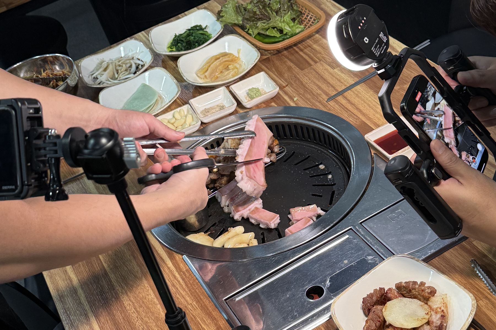
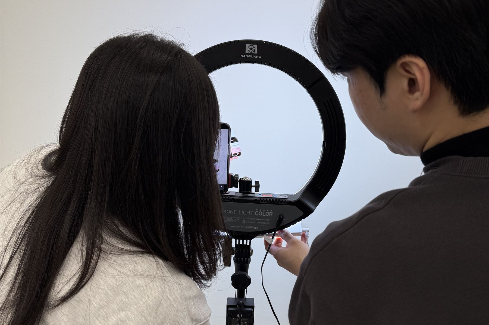
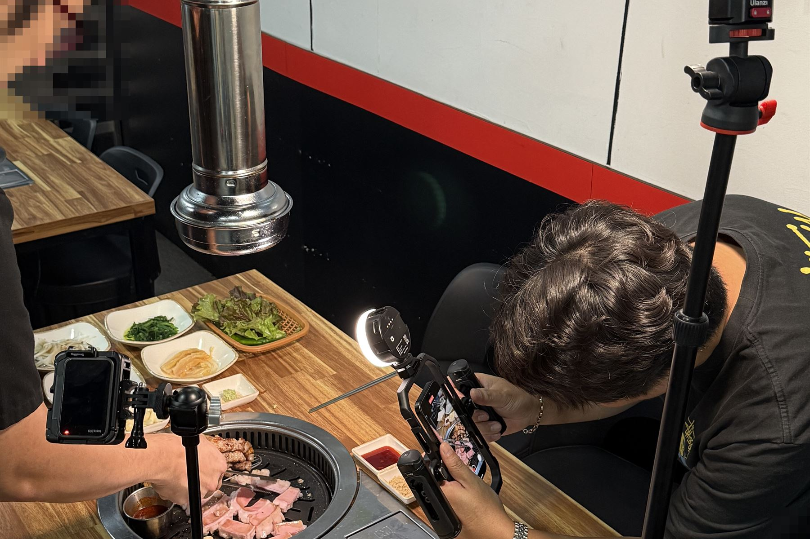
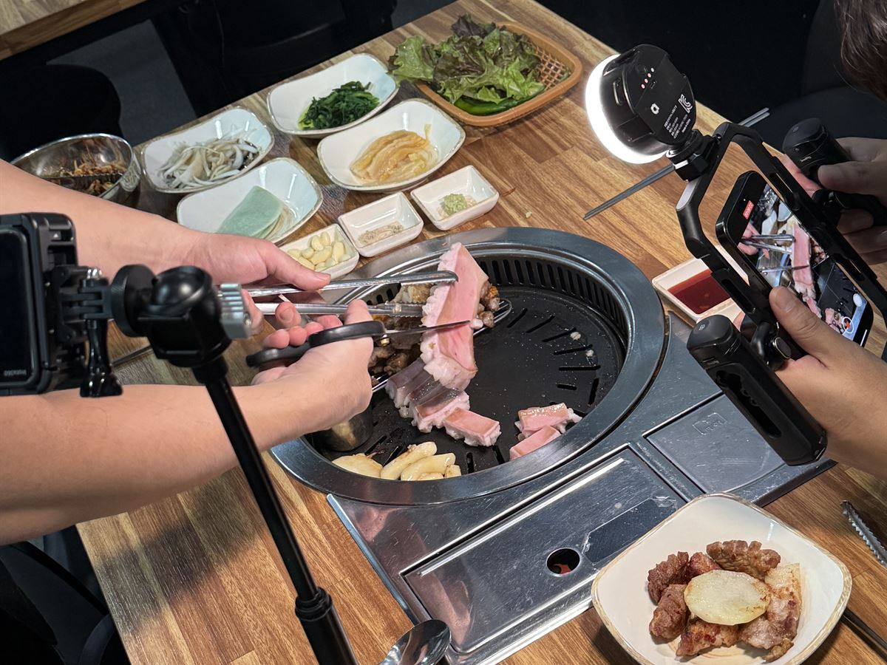
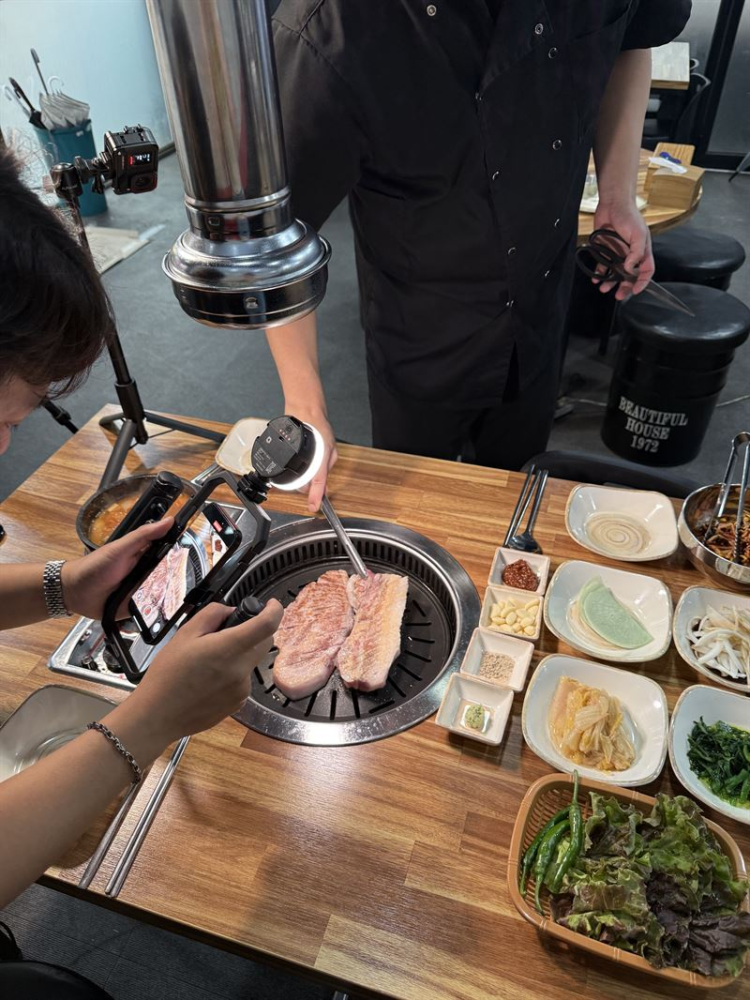
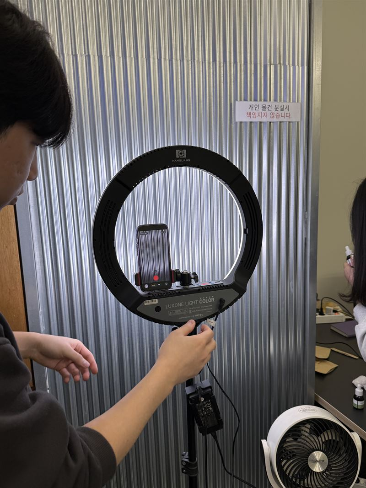
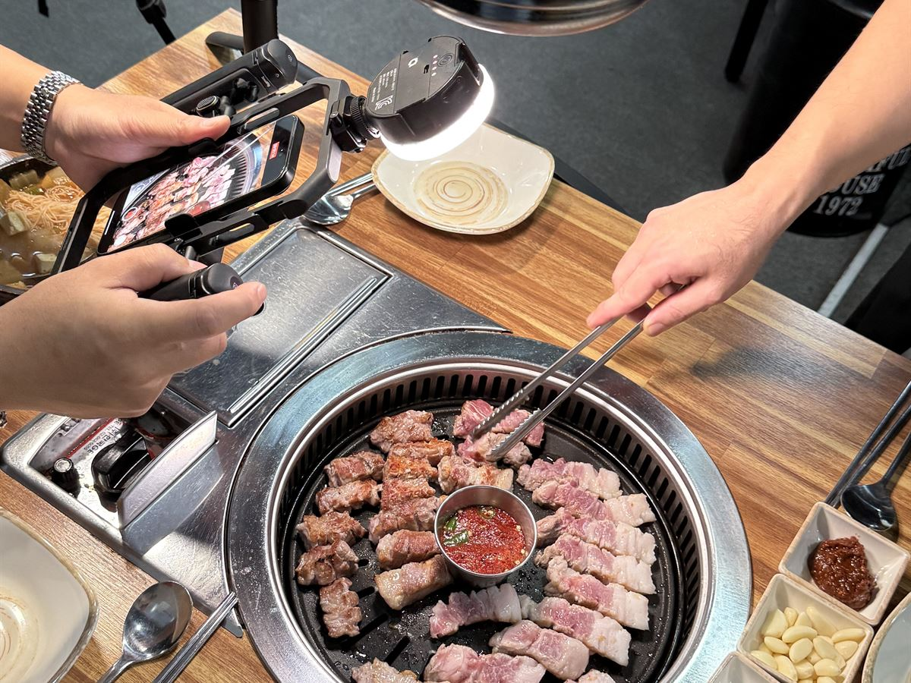

카탈로그 · 상세페이지에 쓸 제품 컷이 필요할 때
카탈로그 지면 구성을 먼저 정하고 그 자리에 맞는 컷 리스트로 촬영해 '이 각도가 없네요' 하고 다시 찍는 일이 없습니다.
대전 · 세종 · 충청권 방문 미팅평일 09:00 ~ 18:00
STUDIO
카탈로그에 들어갈 사진은 카탈로그를 아는 사람이 찍어야 합니다.
제품 컷부터 연구시설·공장 현장 컷까지 디자인팀이 직접 촬영합니다.

왜 그럴까요?
맡기기 전에 이 4가지를 꼭 확인하세요

그 이유는,
기획하는 곳, 촬영하는 곳, 디자인하는 곳이 전부 다르기 때문입니다.
지면을 모르고 찍은 사진은 카탈로그에 앉히는 순간
각도와 여백이 맞지 않아 다시 찍게 됩니다.

촬영한 사진이 카탈로그 지면에 안 맞아 다시 찍은 적 있으신가요?
지면을 모르는 곳에 촬영을 맡길 때 겪는 문제입니다.
이제, 컷 리스트와 촬영과 디자인을 한 번에 맡겨지면에 딱 맞는 컷으로 제작하세요.
 Studio지면을 알고 찍는
Studio지면을 알고 찍는 Design그 컷을 바로 앉히는
Design그 컷을 바로 앉히는 Marketing채널별 쓰임을 설계하는
Marketing채널별 쓰임을 설계하는카탈로그 지면을 알고 찍는 촬영 디자이너와 그 컷을 바로 지면에 앉히는 편집 디자이너가 함께 붙는 통합 운영 조직입니다.

대전지사의 방식
카탈로그 표지에 들어갈 컷과 사양표 옆에 들어갈 컷은 각도와 여백이 다릅니다.
바이오 기업의 클린룸, 대덕산단의 생산 설비, 병원의 진료실처럼 옮길 수 없는 현장은 조명 장비를 가지고 직접 방문합니다.
Lighting Set
누끼 컷 · 연출 컷 · 사용 장면 컷은 조명 위치가 다릅니다. 컷 리스트가 정해지면 세팅을 미리 그려 촬영 당일 시간을 아낍니다.
누끼 컷 — 흰 배경 · 그림자 최소. 좌우 소프트박스에 백라이트를 더해 윤곽을 살립니다. 카탈로그 사양표 옆에 들어가는 컷입니다.




이런 경우
카탈로그 지면 구성을 먼저 정하고 그 자리에 맞는 컷 리스트로 촬영해 '이 각도가 없네요' 하고 다시 찍는 일이 없습니다.
촬영 가능 구역과 보안 규정을 사전에 확인하고 작업자 동선에 방해가 없는 시간에 조명 장비를 가지고 방문합니다.
제품 시연 · 기관 소개 영상과 릴스 · 쇼츠 숏폼을 기획부터 편집까지 한 팀이 진행합니다.
제작 항목
필요한 항목만 골라 의뢰하셔도 좋습니다.
STUDIO
카탈로그와 상세페이지에 쓸 제품 컷을 스튜디오에서 촬영합니다.
누끼 컷과 연출 컷을 같은 조명 조건으로 한 번에 찍습니다.

STUDIO
회사소개서와 홈페이지에 쓸 시설·장비·업무 장면을 현장에서 촬영합니다.
보안 규정과 작업 동선을 확인하고 일정을 잡습니다.

STUDIO
제품 시연 영상, 기관 소개 영상, 숏폼을 기획부터 편집까지 진행합니다.
전시회 부스와 홈페이지에 바로 씁니다.
| 구분 | 기본 제작 사양 |
|---|---|
| 범위 | 제품 · 바이오 · 의료기기 스튜디오 촬영, 연구시설 · 공장 · 병원 출장 촬영, 영상 · 숏폼 |
| 컷 구성 | 누끼 · 연출 · 사용 장면 컷, 지면 기준 컷 리스트 |
| 보정 | 선택 컷 색 보정 · 리터칭 기본 포함, 누끼 파일 제공 |
| 전달 파일 | 고해상도 원본급 + 인쇄용 · 웹용 규격 분리 |
| 출장 | 대전 · 세종 · 청주 · 공주 · 천안 출장비 없음 |
| 표준 기간 | 촬영 1일 + 셀렉 · 보정 3 ~ 5영업일 |
상담 시 목적 · 수량 · 일정에 맞춰 조정합니다.
진행 순서
촬영 품목과 사용처,
일정을 확인합니다.
지면 구성 기준으로 컷 리스트를 만들고
견적과 일정을 안내합니다.
스튜디오 또는 현장에서
컷 리스트대로 촬영합니다.
컷을 함께 고르고
색 보정 · 리터칭을 진행합니다.
인쇄용 · 웹용 규격으로 정리해
고해상도로 전달합니다.
제작 사례


About us
퍼스트디자인 전체 실적 기준입니다. 대전지사는 같은 기획 · 인쇄 기준으로 충청권 기관과 기업을 맡습니다.
오랜 시간 쌓아온
현장 실무 경험
수많은 기업 · 기관이
퍼스트와 함께합니다
다양한 실무 경험으로
믿고 맡기십시오
“내 일처럼” — 그게 우리가 일하는 방식입니다.
정부 지원사업 안내물, 정부대전청사 · 세종 공공기관 홍보물, 지자체 캠페인까지 제출 규격과 검수 절차를 아는 상태로 진행합니다.
대덕연구단지 정부출연연구기관과 대학 연구센터의 연구성과집 · 학회 자료는 발간 규정과 표기 원칙을 정리한 뒤 시작합니다.
대기업 계열사와 공기업, 대덕테크노밸리의 바이오 · 기술기업 인쇄물을 다수 제작했습니다. 브랜드 가이드라인을 지키면서 결과물을 만듭니다.
번역 부서를 직접 운영해 영문 · 중문 · 베트남어 인쇄물을 번역부터 조판까지 한 번에 처리합니다.
자주 묻는 질문
대전에서 촬영을 의뢰하실 때 가장 많이 받는 질문입니다.
대전 전 지역과 세종·청주·공주·천안 등 충청권은 출장비 없이 방문합니다. 연구시설·공장·병원처럼 장비를 옮기기 어려운 현장은 조명 장비를 가지고 직접 찾아가 촬영합니다.
품목 리스트를 받아 컷 수와 연출 방향을 먼저 정리한 뒤 일정을 나눠 촬영합니다. 카탈로그용 누끼 컷은 같은 조명 조건으로 한 번에 찍어야 지면에서 통일감이 나오기 때문에 품목별 순서를 미리 잡습니다.
네. 선택 컷에 대한 색 보정과 리터칭이 기본 포함됩니다. 카탈로그·홈페이지·상세페이지에 바로 쓸 수 있는 수준으로 마무리하고, 배경 제거 누끼 파일도 함께 드립니다.
보정 완료본을 고해상도 파일로 전달하고, 인쇄용과 웹용 규격으로 나눠 정리해 드립니다. 원본 파일이 필요하면 사전에 협의해 주세요.
네. 촬영만 의뢰하셔도 됩니다. 다만 디자인팀이 지면 구성을 알고 촬영하면 카탈로그에 필요한 각도와 여백을 처음부터 맞출 수 있어, 카탈로그·홈페이지까지 함께 진행하시면 재촬영이 줄어듭니다.
네. 촬영 기획 단계부터 방문해 품목과 컷 리스트를 함께 정리합니다. 전화 1600-9487로 편하게 요청해 주세요.
FIRST DESIGN DAEJEON
기획 · 디자인 · 번역 · 촬영 · 인쇄를 한 팀이 진행합니다.
원고가 정리되기 전이라도 목차와 일정부터 함께 잡아 드립니다.